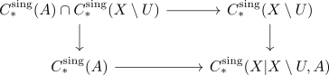

relative singular homology and excision theorem
Proposition
The relative singular homology functor satisfies the Excision Axiom of Homology: s For a topological space $X$ and subspaces $U,A \subseteq X$ with $\overline{U} \subseteq \mathrm{int}(A)$ (cf. closure, interior) it holds, that
is a quasi-isomorphism (even a chain homotopy equivalence)
Proof
Let $C_{*}^{\mathrm{sing}}(X \vert X \setminus U, A)$ be the image of the map of chain complexes
induced by $X \setminus U \hookrightarrow X, A \hookrightarrow X$ on the elementary tensors.
Let furthermore $H_{*}(X \vert X \setminus U, A)$ be the the homology
Then

commutes and furthermore, the top left term is given by $C_{*}^{\mathrm{sing}}(A \setminus U)$
By applying levelwise the first isomorphism theorem for groups, this induces an isomorphism on the horizontal cokernels
For any $n \in \mathbb{Z}$, the composition
\begin{displaymath}
\begin{tikzcd}
H_n(X \setminus U, A \setminus U) \arrow[]{r}{\cong} H_n(C_{*}^{\mathrm{sing}}(X \vert X \setminus U, A)/ C_{*}^{\mathrm{sing}}(A)) \arrow[]{r}{\cong} H_n(C_{*}^{\mathrm{sing}}(X)/C_{*}^{\mathrm{sing}}(A)) = H_n(X,A)
\end{tikzcd}
\end{displaymath}is an isomorphism, where the first morphism is given by the isomorphism of the cokernels described above and the second by the 5-Lemma / 5-Lemma for quasi isomorphisms0
welches 5 lemma ** todo:
- represent elements in $H_n(-)$
- use barycentric subdivision
reltative
corollary of: